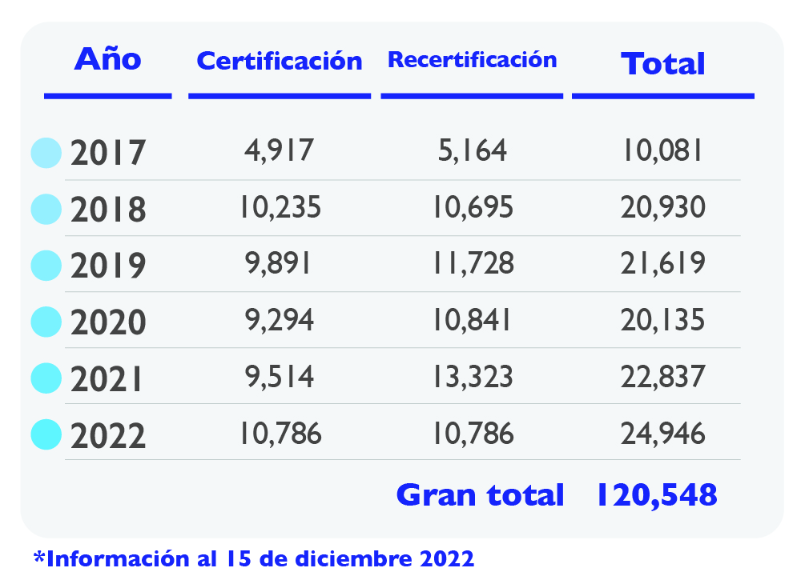
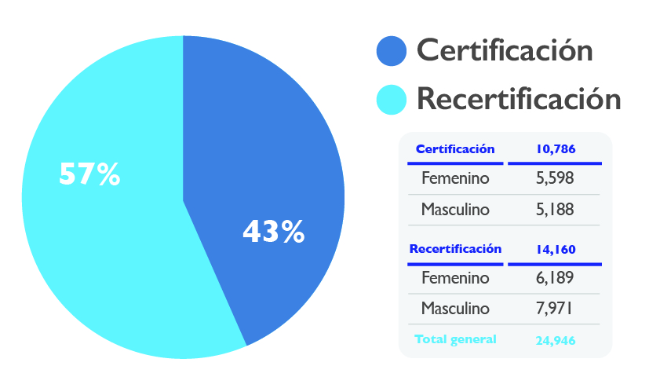
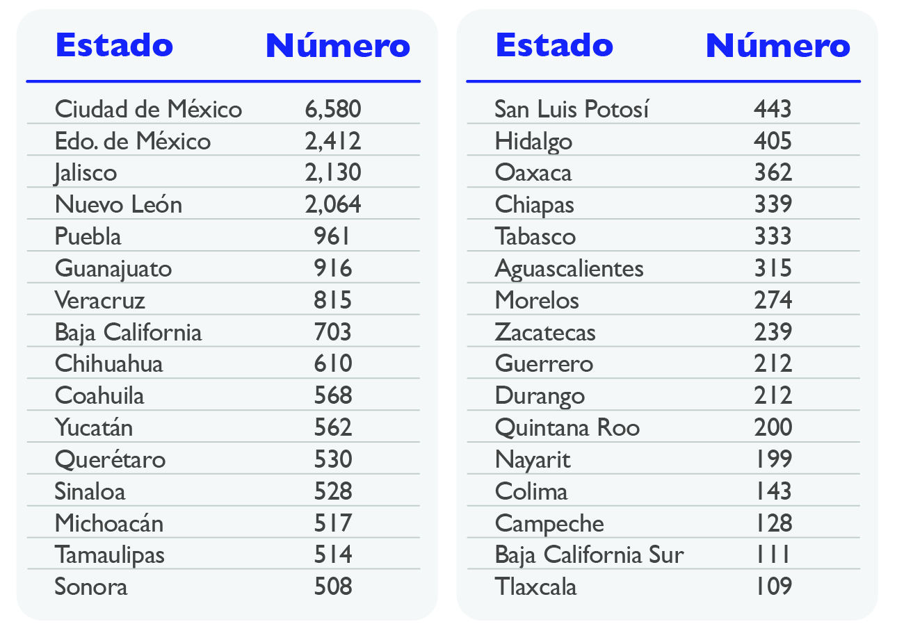
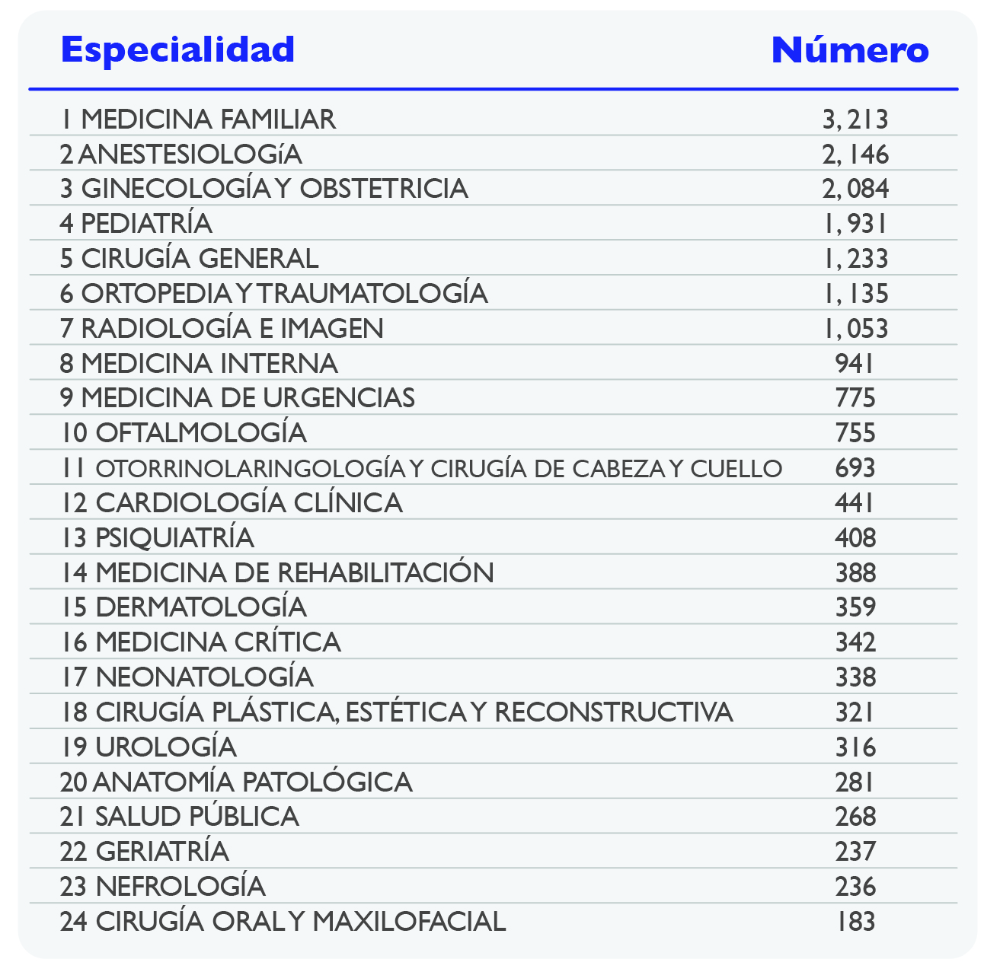
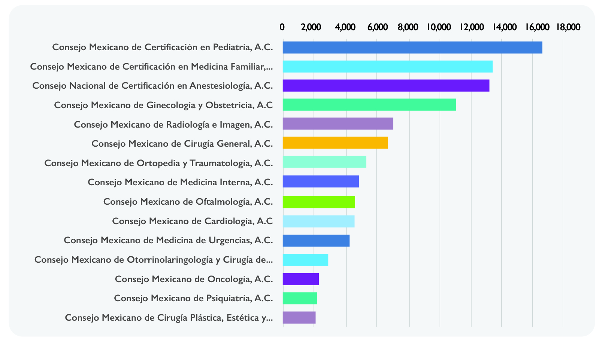

Número de médicos especialistas en México en 2022
Un motivo de satisfacción para México es el aumento anual de médicos especialistas con certificación vigente. La certificación de médicos especialistas llevaba un crecimiento continuo, solo en el año 2020 por la pandemia del SARS-CoV-2 (COVID-19) se tuvo una disminución, misma que se revertió en los últimos dos años.
Médicos especialistas certificados y recertificados en el año 2022: 24,946
Durante el 2022, la recertificación de médicos especialistas fue 7% mayor que la de certificación, esto es un área de oportunidad para los Consejos. Además, hubo un aumento en la certificación de médicas especialistas, superando por 2% a los médios; no así en la recertificación, pues los médicos son mayoría por 6%.
Médicos especialistas certificados y recertificados en la República Mexicana
Con relación a la distribución en la República Mexicana se observa la mayor concentración de médicos especialistas en 4 estados: Ciudad de México, Estado de México, Jalisco y Nuevo León, que en conjunto representan el 53% de los médicos certificados en 2022.
Las 25 especialidades con mayor número de médicos especialistas
25 especialidades más representativas con su número de médicos especialistas certificados.
Los 15 Consejos de Especialidades Médicas con mayor número de médicos especialistas vigentes (2017-2022)
Estos médicos especialistas representan el 83% de la totalidad de especialistas con certificación vigente.
Especialidades quirúrgicas vs especialidades médicas y de gabinete
Porcentaje de especialidades quirúrgicas vs las especialidades médicas y de gabinete; en la siguiente gráfica se observa la comparativa de la certificación y recertificación en las especialidades quirúrgicas.